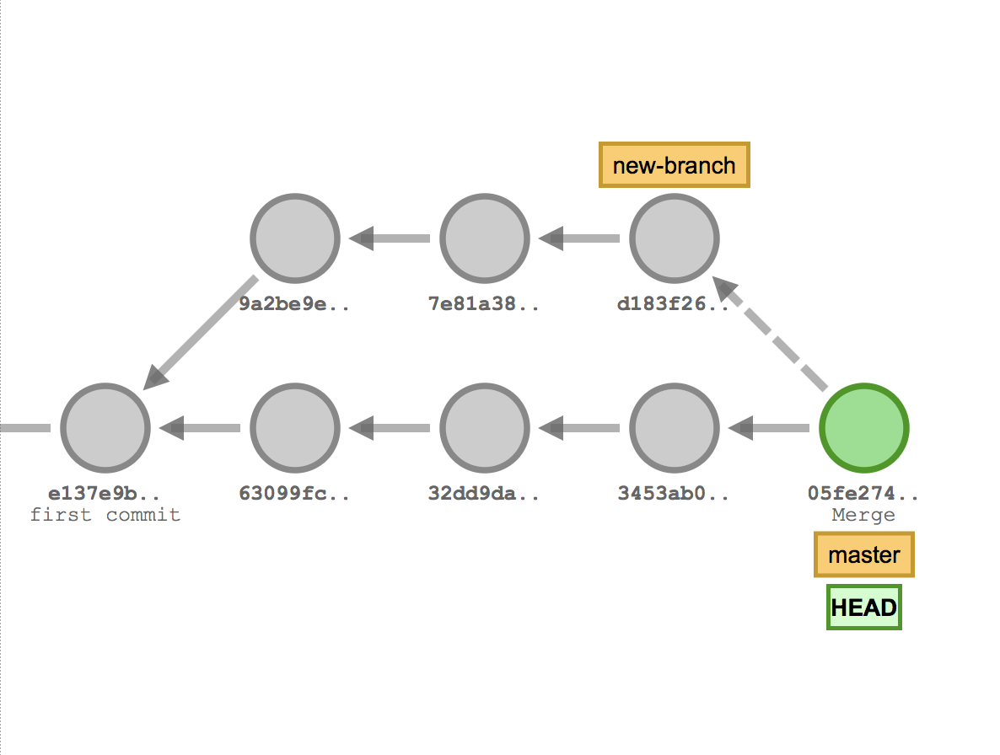
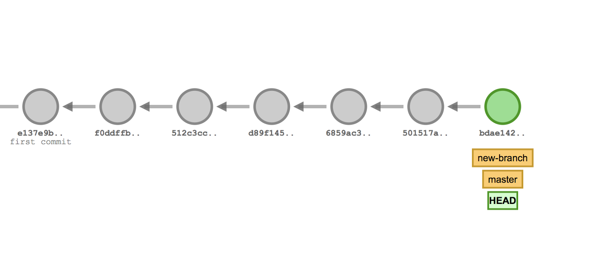

{{appName}}
Git - Distributed VCS
- Distributed version control systems give developers flexibility and freedom by providing every collaborator with a copy of the entire repository at any time, including all branches (lines of work) and commits (saved points in history) on a developer's local machine.
Git - Key terms
- Repositories: A collection of source files used to compile your project
- Commits: A snapshot of your project as it existed at a specific point in time. You create commits as you work on your project to indicate points when you added and removed discrete units of work
- Branch: A series of commits that represent the changes in your project over time. Every repository has a default branch, which contains the production-ready version of your code. Create additional branches when you’re working on new features, fixing bugs, or making other changes to your project. These branches keep your experimental code separate from your tested production code.
- Merge: The combined history of two or more branches. Most of the time, you’ll merge your feature branch into the default or deployed branch of the repository in order to move the features into production.
- Tag: A pointer to a specific commit, which provides a persistent reference to an event. Typically, tags are used with semantic versioning to represent points when your application was released - v1.1
Git Internals
How Git Stores Data
- The files compressed in the snapshot (commit) are each given a unique SHA-1 hash—referred to as blobs. Those blobs are referenced by a tree, and that tree is referenced by the commit.
- SHA-1 is a cryptographic hash function which takes an input and produces a 160-bit (20-byte)
hash value known as a message digest
SHA1("The quick brown fox jumps over the lazy dog") => 2fd4e1c67a2d28fced849ee1bb76e7391b93eb12 - As you make changes to your files and create new commits, Git identifies the changed files and applies a new SHA-1 hash to the file, while unchanged files retain their existing SHA-1 hash.
- As the SHA-1 hash for a file changes, it references the previous SHA-1 hash as the parent. In GitHub, you can see the first 7 characters of the SHA-1 hash on any commit.
- As you create new commits, they reference the previous commit as its parent.
$ git log --oneline --graph --decorate * b314b10 (HEAD -> crazy-experiment, master) init
Git Diff
git diffenable us to compare between any two commits, branches, or tags in the repository.
For example, to compare two commits with SHA-1 hash references 4e3dc9b and 0cd75d4, enter command:git diff 4e3dc9b 0cd75d4-
$ git diff diff --git a/README.md b/README.md index 630b386..f5be3a7 100644 --- a/README.md +++ b/README.md @@ -1 +1,3 @@ -## Readme +### Readme + +#### Topic 1$ git branch * crazy-experiment master $ git diff HEAD diff --git a/README.md b/README.md index 630b386..f5be3a7 100644 --- a/README.md +++ b/README.md @@ -1 +1,3 @@ -## Readme +### Readme + +#### Topic 1
Git Branching

- Branching is a feature available in most modern version control systems (VCS)
- In Git, branches are a part of your everyday development process
- Effectively a pointer to a snapshot of your changes
- When you want to add a new feature or fix a bug—no matter how big or how small—you spawn a new branch to encapsulate your changes
- This makes it harder for unstable code to get merged into the main code base, and it gives you the chance to clean up your work before merging it into the main branch.
Branch details
- A branch represents an independent line of development. Branches serve as an abstraction for the edit/stage/commit process
- Way to request a brand new working directory, staging area, and project history
- New commits are recorded in the history for the current branch, which results in a fork in the history of the project
- git branch command lets you create, list, rename, and delete branches
# List all the branches
$ git branch
* master
# Create new branch
$ git branch
# Delete a branch - prevents you from deleting the branch
# if it has unmerged changes
$ git branch -d
# Force delete the specified branch
$ git branch -D
# Rename Branch
$ git branch -m
# List all remote branches
$ git branch -a
Creating Branches

$ git branch
* master
$ git branch crazy-expriment
$ git branch
crazy-expriment
* master
$ git checkout crazy-experiment
Switched to branch 'crazy-experiment'
- When you create a branch, all Git needs to do is create a new pointer - this doesn’t change the repository in any other way
-
git branch crazy-experiment

- To start adding commits to it, you need to select it with git checkout,
Git Merge
- Join two or more development histories together
-
A---B---C topic / D---E---F---G master - Then
git merge topicwill replay the changes made on the topic branch since it diverged from master (i.e., E) until its current commit (C) on top of master(G) -
Record the result in a new commit(H) along with the names of the two parent commits (G and C)
and a log message from the user describing the changes
A---B---C topic / \ D---E---F---G---H master
Git Merge Strategies - Recursive Merge

- Occurs when your feature branch doesn’t have the latest version of code in the branch you’re trying to merge into
- When you create a feature branch, you’re basing it off the original branch at its current state. As you make changes to your branch, other collaborators might be merging their own changes into the original branch.
- When you create a pull request and merge your changes, a merge commit is created. This takes the changes you made to your branch and the current state of the branch you’re merging into and creates a new commit that combines those changes
- Occurs when there have been no new commits, other than the ones you’re trying to merge, on the original branch since you created your feature branch from it.
- Since the original branch doesn't have any changes, the tip of the branch is simply fast forwarded to include the changes on your branch. With a fast-forward merge, Git does not create a new merge commit.
- GitHub serves as a remote, giving developers an accessible source of truth for their shared work
- Issues: Have general discussions about your project, make plans for new features, and discuss bugs. An issue is only a discussion, no actual changes to code take place here.
- Pull requests: A pull request is a package of commits you’re requesting to be merged into the default branch.
A pull request provides a place to discuss the changes you’re proposing and invite other team members
to comment and complete code reviews.
Pull requests also help you see the result of automated tests and many other cool integrations - Create a branch off of master
- By default, the production version of your project lives in the master branch.
- When you’re ready to experiment with a new feature or fix an issue, create a new branch of the project. The branch will look exactly like master at first, but any changes you make will only be reflected in your branch.
- Make commits
- As you make changes to the files within the project, commit them to your feature branch.
- Open a pull request
- Open a pull request to start discussing your changes. A pull request is meant to be a starting point for further code refinement—no need for it to be a perfect work of art.
- Collaborate
- Interact with integrations
- Make more commits
- Merge to master branch
- Once your team approves your changes, merge your pull request from the feature branch into the master branch.
Git Merge Strategies - Fast-forward Merge

GitHub Collaboration Features
GitHub Workflow
Recover from large file > 50 MB issue in GIT
git filter-branch -f --index-filter \
'git rm --cached -f --ignore-unmatch PATH_OF_THE_LARGE_FILE' HEAD